Bathroom lighting isn't just about being able to see clearly. It sets the entire mood of the room.
The exact same bathroom can feel clinical under one light source, and genuinely luxurious under another.
These 17 ideas lean into style and atmosphere, not just the practical fixture types a bathroom technically needs.
Most of them actually work best layered together, rather than picked one at a time.

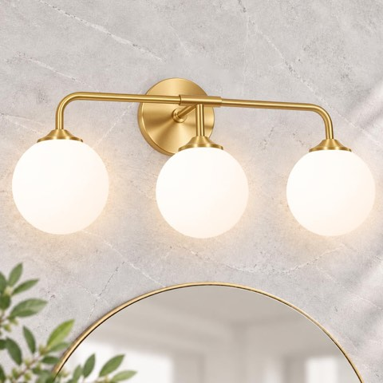
Daunton Brushed Gold Bathroom Light Fixture, 3-Light Vanity Light, Milk White Glass
Shop on Amazon1. Mix Fixture Types With Intention
The most well-lit bathrooms rarely rely on just one fixture type. They layer two or three from this list together.
A combination of ambient, task, and accent lighting covers every actual need the room has, from grooming in the morning to relaxing at night.
This is less a single idea on its own and more the organizing principle behind everything else on this list.
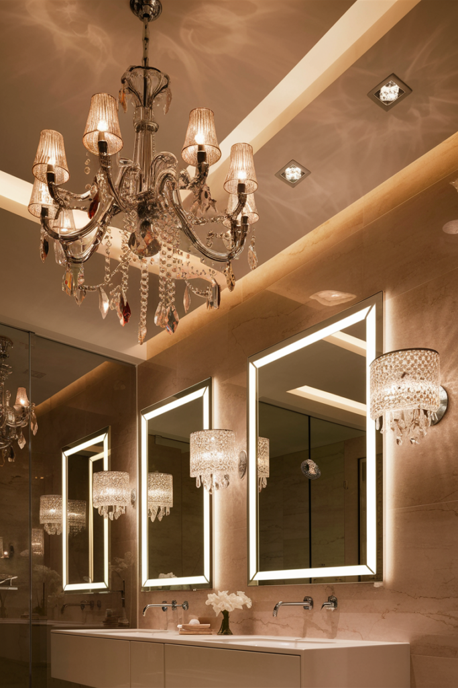
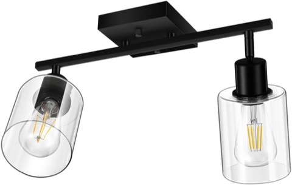
LED Track Lighting Fixtures Ceiling, 17" Track Light, Black, Clear Glass Shade
Shop on Amazon2. Light a Few Candles
Nothing replicates the specific warmth of real candlelight, not even the best LED dimmer on the market.
A cluster of candles near the tub turns an ordinary bath into something closer to an actual spa experience.
Treat this as a layer on top of practical lighting, not a replacement for it. Candles alone won't get you through daily grooming tasks.
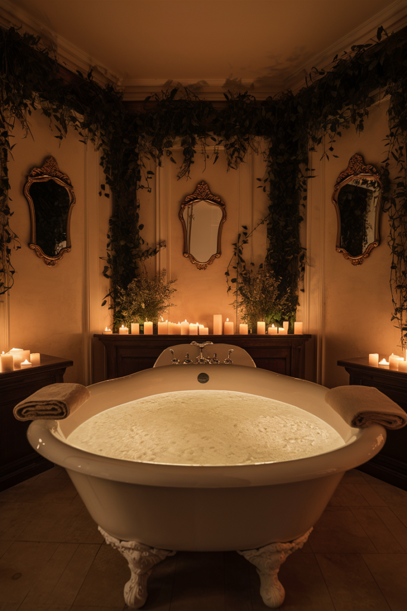
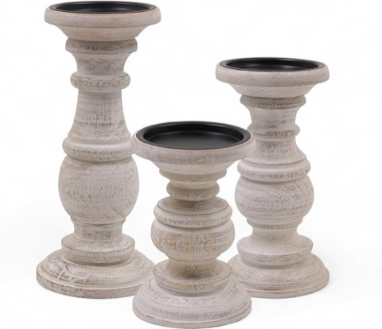
Hosley Set of 3 Whitewashed Wooden Pillar Candle Holders, Spa and Aromatherapy
Shop on Amazon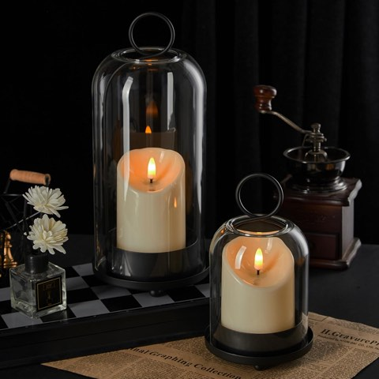
Metal Candle Holder with Handmade Glass Dome, Brass, Hurricane Candle Holders, Set of 2
Shop on Amazon3. Add an Over-Mirror Light Bar
A horizontal light bar mounted above the mirror delivers even, shadow-free illumination across your whole reflection.
It's a more modern take on the classic vanity light strip, with a cleaner, more minimal look.
Particularly useful if you apply makeup or shave daily and need reliably even light every single time.
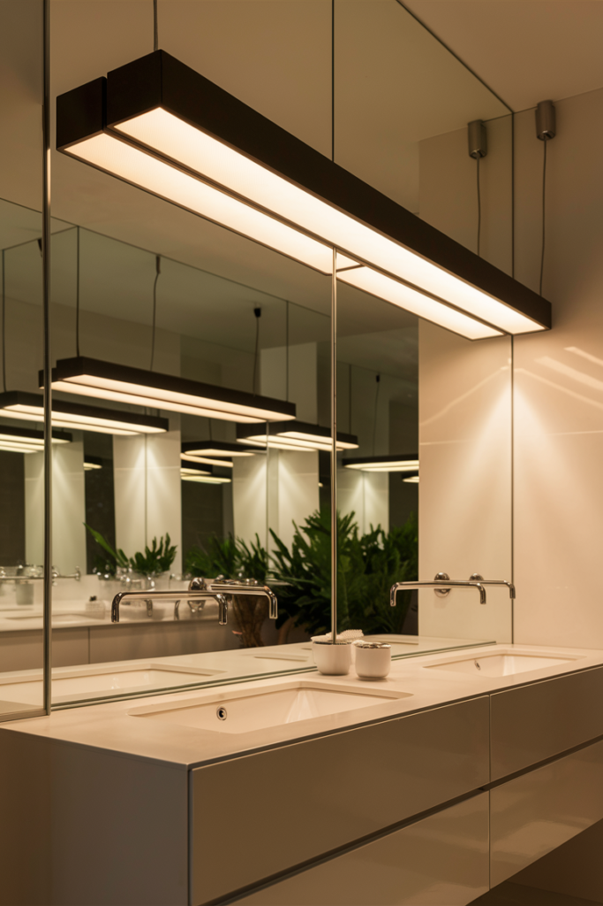
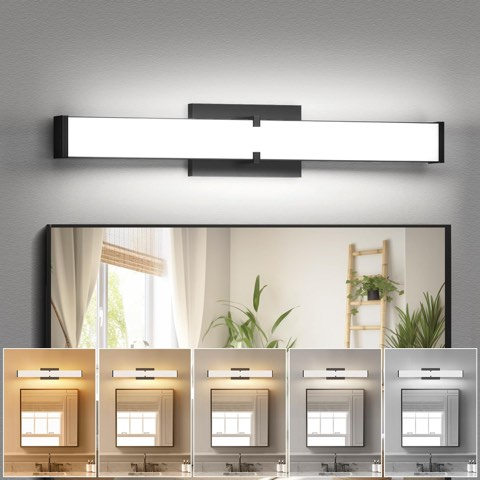
Modern Bathroom Light Fixtures Over Mirror, 32 Inch, Matte Black, 5CCT LED
Shop on Amazon4. Go Colored With LEDs
Adjustable color LEDs let the room shift mood entirely. A cool blue for an energizing morning, a warm amber for winding down at night.
This suits you if you want real flexibility rather than committing to one fixed light temperature forever.
A playful option, and one that works especially well combined with a smart home lighting system.
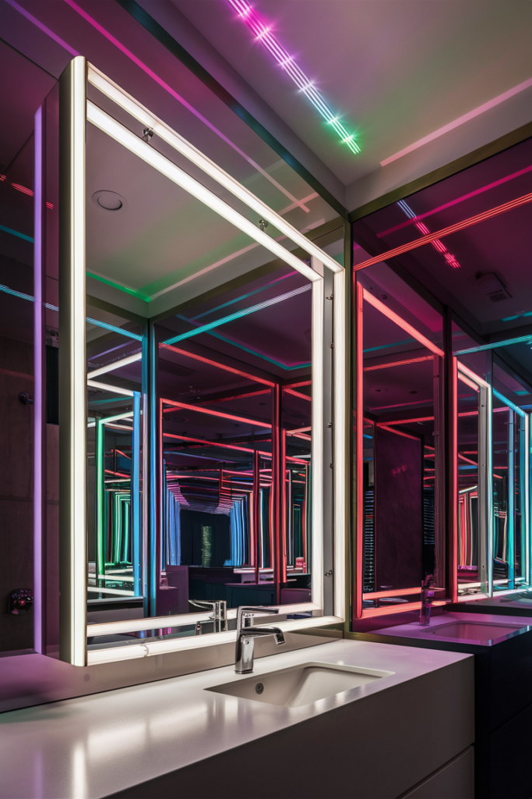
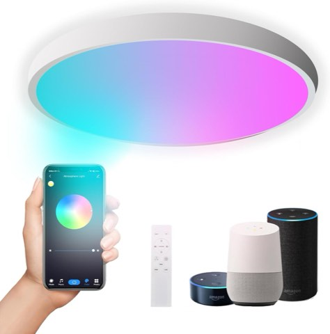
Smart LED Ceiling Light, Works with Alexa and Google Home, RGBCW Color Changing
Shop on Amazon5. Add Motion Sensor Lights
A light that turns on automatically solves the groggy-morning, fumbling-for-a-switch problem directly.
This works especially well paired with under-cabinet lighting, for a soft nighttime glow that needs no switch flipped at all.
A practical convenience upgrade that doesn't ask you to sacrifice any style to get it.
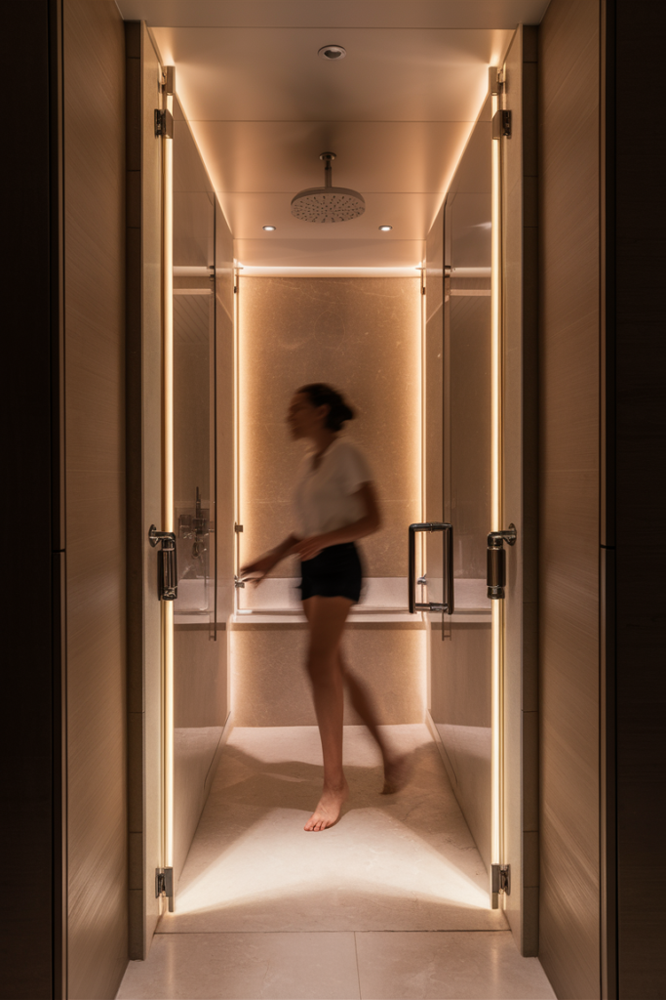
6. Try Vintage Exposed Bulbs
A fixture with visible Edison-style bulbs brings warmth and a bit of retro character into the room.
This suits a farmhouse, industrial, or vintage-leaning bathroom a lot more than a sleek modern one.
The warm, slightly amber light these bulbs cast adds to the cozy effect all on its own.
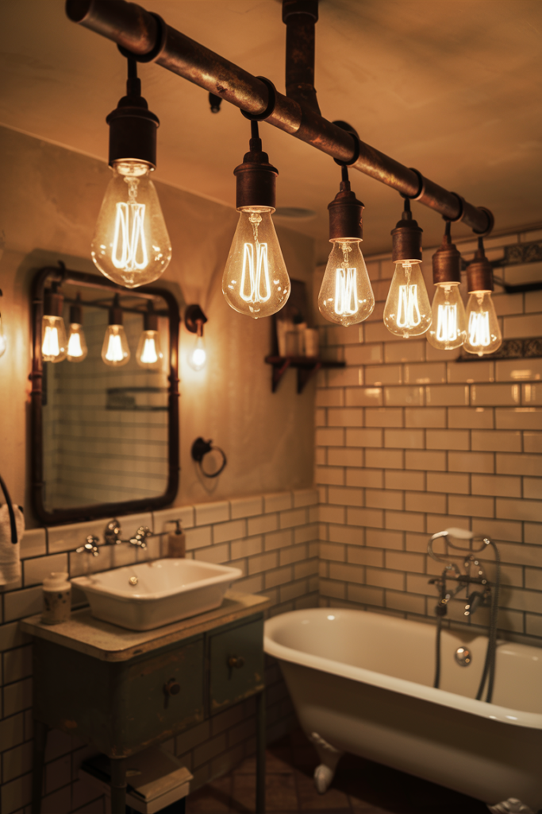
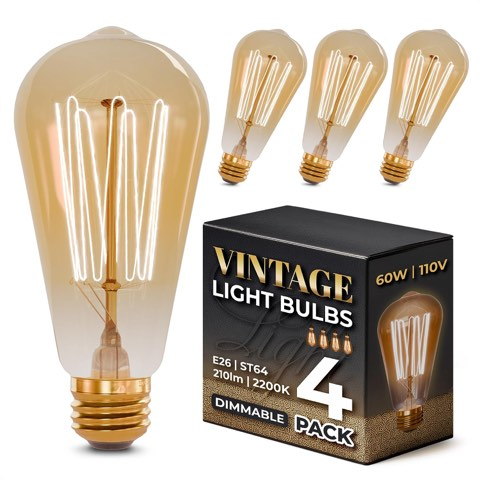
Incandescent Light Bulbs, 60 Watt, 210 Lumens, 4 Pack, ST64 Edison Bulbs
Shop on Amazon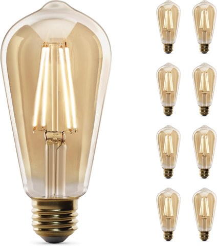
Feit Electric Vintage Exposed Filament Amber Glass LED ST19, Dimmable, 8 Pack
Shop on Amazon7. Choose Flush Mounts for Low Ceilings
A flush-mounted fixture gives you real light without hanging down into a room with limited ceiling height.
This suits an older home, or a smaller bathroom where a pendant or chandelier simply wouldn't fit.
Modern flush mount designs have moved well past the plain, dated versions this category used to mean.
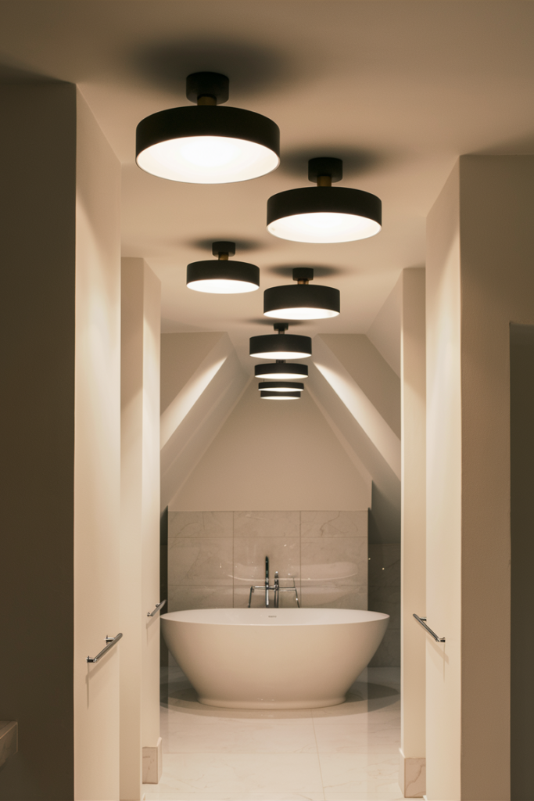
8. Add Accent Lighting on Your Favorite Features
A small directional light trained on an interesting tile pattern, a piece of art, or an architectural detail gives that feature real presence after dark.
This works best as a layer on top of general lighting, not as the room's only light source.
A subtle way to highlight whatever detail in the room deserves the most attention.
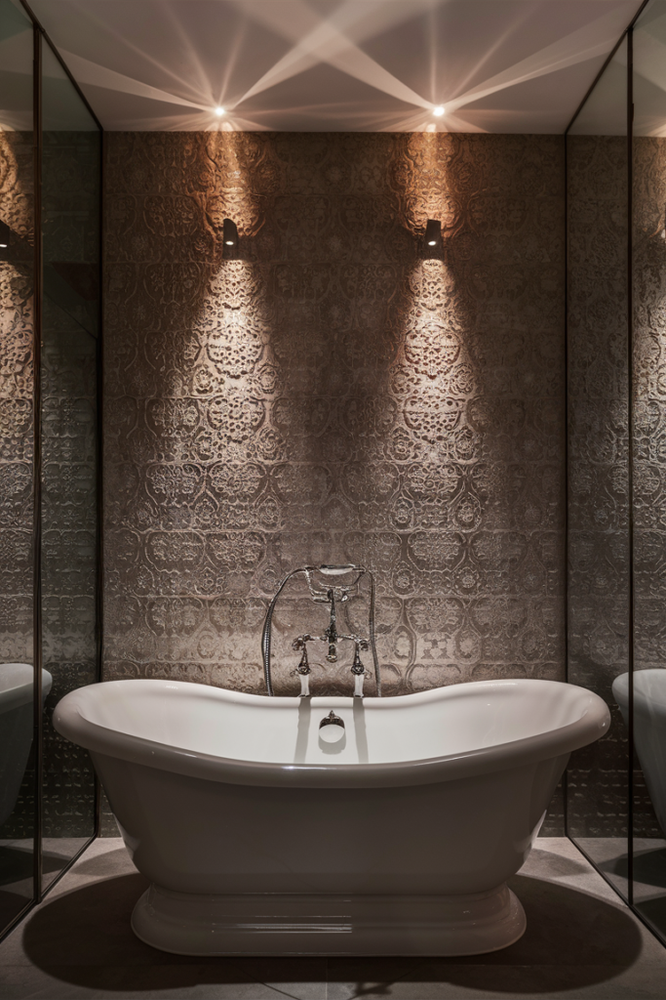

9. Install Dimmer Switches
A dimmer turns one fixture into several different moods. Bright for grooming, soft for an evening soak.
This is one of the cheapest upgrades on this entire list, relative to the flexibility it actually adds.
Worth adding to nearly any fixture in the room, not just one specific type.
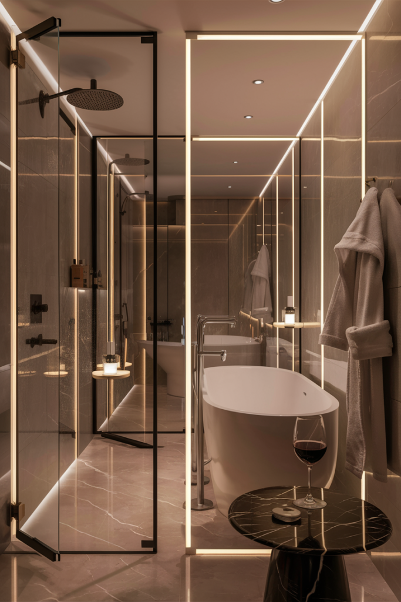
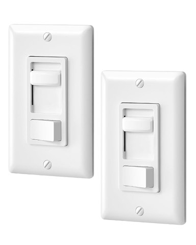
DEWENWILS 2 Pack Dimmer Switch, Single-Pole or 3-Way Dimmer Light Switch
Shop on Amazon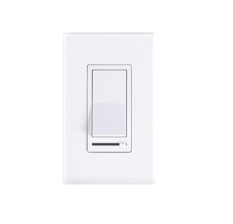
Cloudy Bay in Wall Dimmer Switch for LED Light, 3-Way Single Pole Dimmable
Shop on Amazon10. Let in a Skylight
Natural light does more for a bathroom's mood than any artificial fixture ever could, when the layout allows for it.
A skylight brings daylight into a room that often has limited window space because of privacy concerns.
This is a bigger structural investment than anything else on this list, but it delivers a genuinely different quality of light.
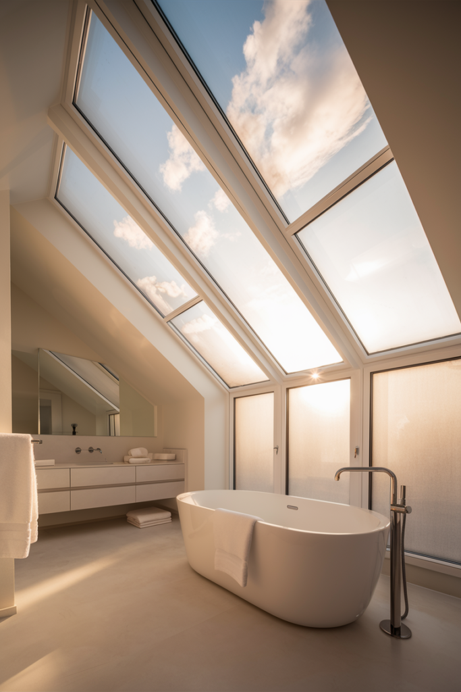
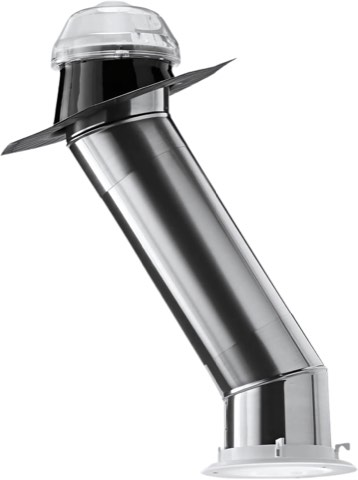
Solatube 160 DS 10-Inch Tubular Skylight Extension Kit, Natural Daylight
Shop on Amazon11. Install an LED Mirror
A mirror with integrated LED lighting around its edge solves the shadow problem directly at the source.
Many versions include adjustable brightness and color temperature, adding flexibility a fixed fixture just can't match.
This is one of the more modern, tech-forward choices on this list, and it's increasingly the default in new builds.
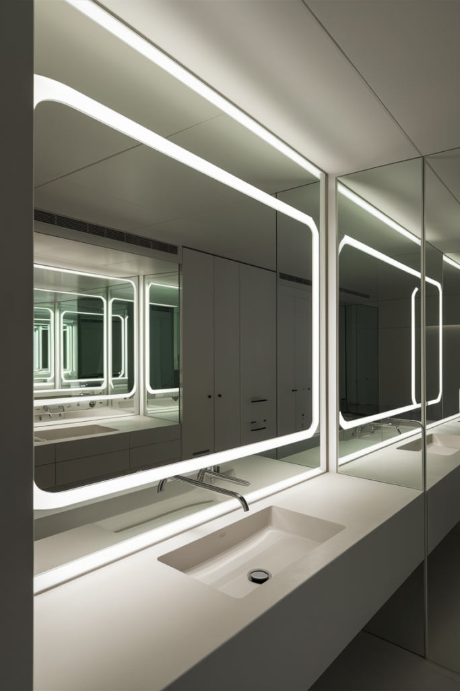
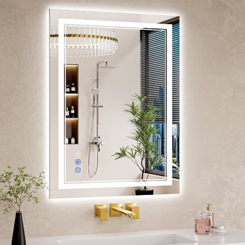
24"x32" LED Bathroom Mirror with Lights, Anti-Fog, Backlit + Front Lit, 3 Colors
Shop on Amazon
12. Hang Wall Sconces With Real Presence
A bold sconce design adds drama in a way a flush, built-in fixture never could.
This works especially well paired with a statement mirror, where the two elements play off each other.
Sconces also double as general ambient lighting when placed away from the vanity, not just task lighting at the mirror.
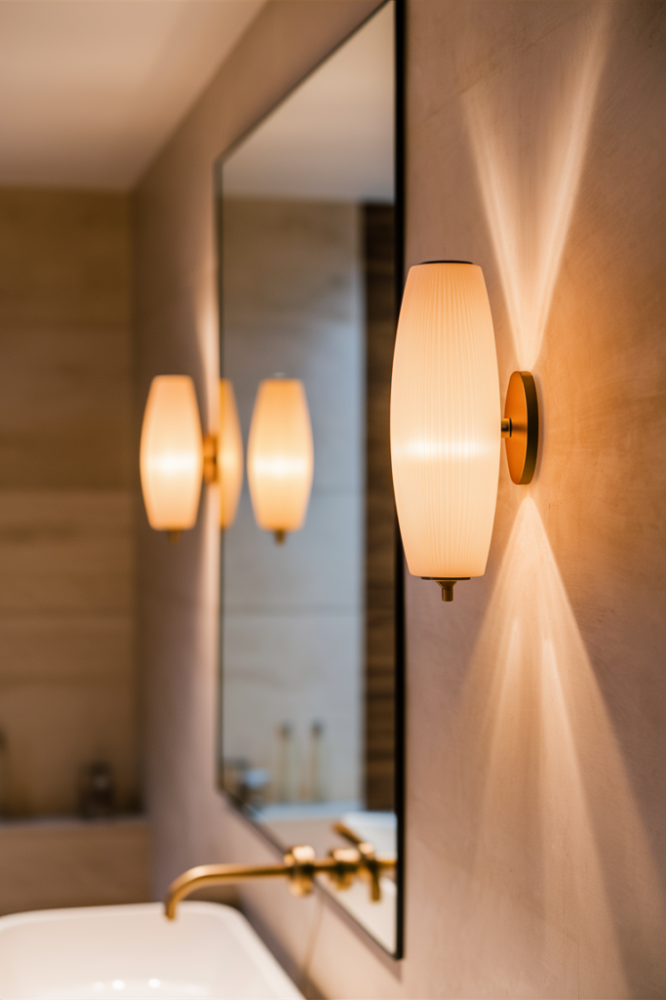
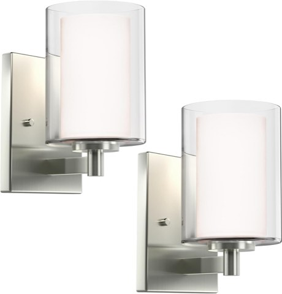
Kalium Wall Sconces, Set of Two, Modern Brushed Nickel Vanity Wall Lights
Shop on Amazon13. Add Pendant Lights as a Design Statement
A pair of pendants flanking the mirror does the job of vanity lighting while adding real visual interest.
This suits a bathroom that wants a more curated, designed feel than a standard built-in fixture provides.
Pendant height matters here. Too low interferes with the mirror, too high loses the lighting benefit entirely.
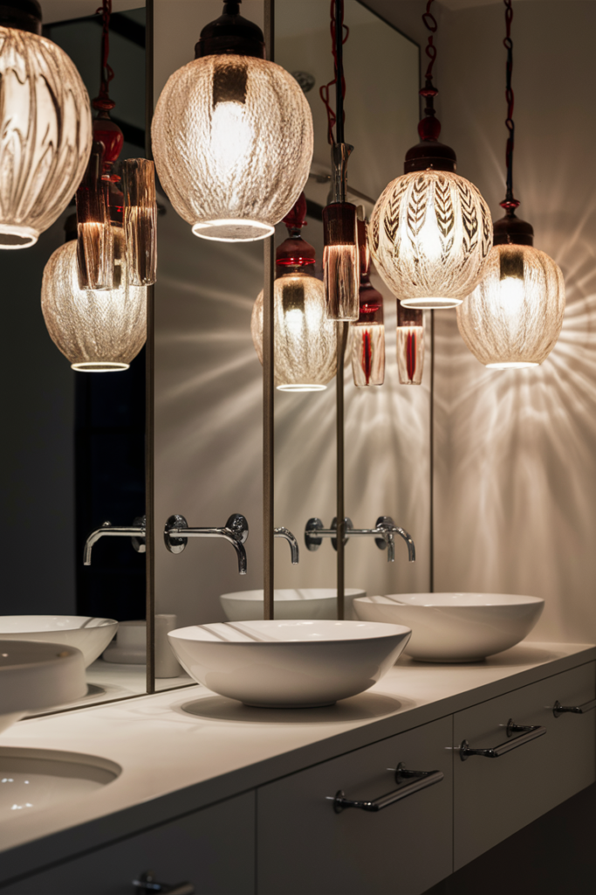
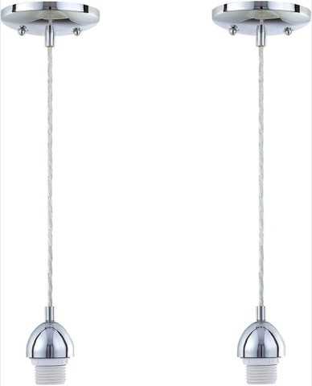
Ciata Lighting One-Light Indoor Mini Pendant, Adjustable, Chrome Finish, 2 Pack
Shop on Amazon14. Add Under-Cabinet Lighting for Late-Night Trips
A soft strip of light under the vanity cabinet gives you just enough visibility for a nighttime bathroom trip, without the jolt of full overhead light.
It's a small, practical addition that also adds a subtle glow effect worth the install all on its own.
Dimmable or motion-activated versions add even more convenience for middle-of-the-night use.
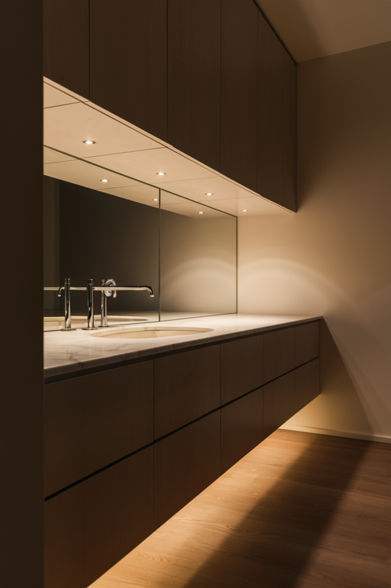

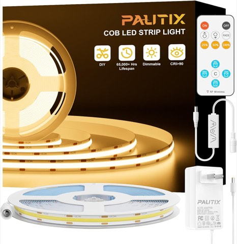
PAUTIX COB LED Strip Light, 16.4ft, Warm White 2700K, Dimmable, RF Remote
Shop on Amazon15. Choose Recessed Lighting for a Clean Look
Flush, unobtrusive recessed fixtures disappear into the ceiling, keeping the room's visual focus on everything else.
This suits a minimalist or modern bathroom where a visible fixture would compete with the room's clean lines.
Spreading several recessed lights evenly avoids the single harsh shadow one fixture alone would create.
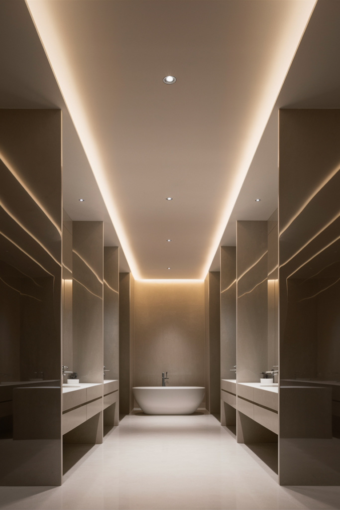
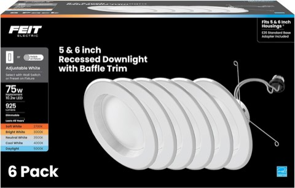
Feit Electric 5/6in LED Recessed Downlight Retrofit Kit, 75W Equivalent
Shop on Amazon16. Fix Your Vanity Lights First
Side-mounted vanity lights, instead of one single light directly overhead, eliminate the harsh shadows that make grooming tasks harder.
Warm-toned bulbs matter more here than anywhere else in the house, since this is where lighting directly affects how your face looks in the mirror.
This isn't just practical, either. Good vanity lighting is also one of the most noticeable style upgrades a bathroom can get.
17. Go Big With a Statement Chandelier
A chandelier in a bathroom reads as unexpected in the best way, turning a purely functional room into something genuinely dramatic.
This works especially well over a freestanding tub, where it becomes the room's clear focal point.
Scale it to the room. A smaller chandelier for a powder room, something bolder for a larger primary bath.
It's one of the highest-drama choices on this entire list.
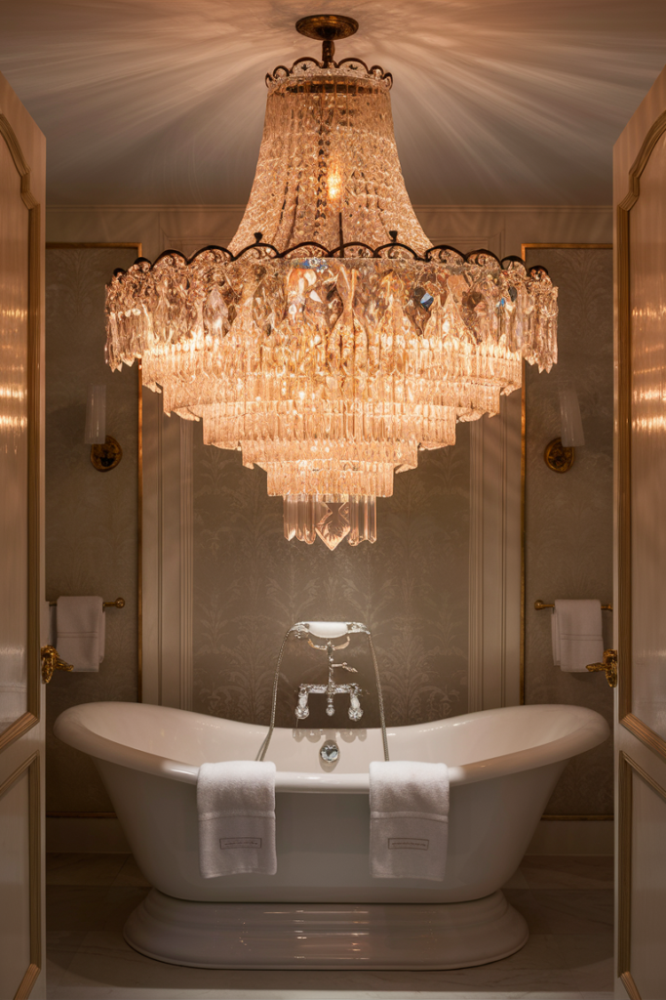
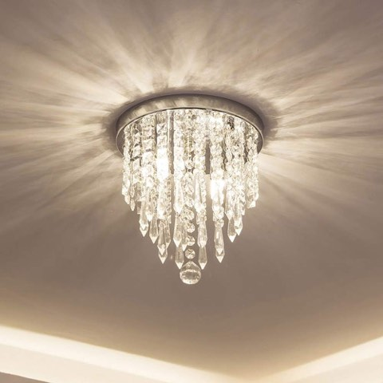
lifeholder Mini Chandelier, Crystal Chandelier Lighting, 2 Lights, Flush Mount
Shop on AmazonLet the Mood Guide the Layering
Bathroom lighting deserves more attention than it usually gets.
A single overhead fixture handles the bare minimum, but it leaves most of the room's potential mood completely untouched.
Start with whichever idea solves an actual daily problem you have right now, bad vanity shadows, a groggy 2 a.m. trip, then layer in the more atmospheric choices after that.
The right combination turns a purely functional room into one that's genuinely worth spending time in.